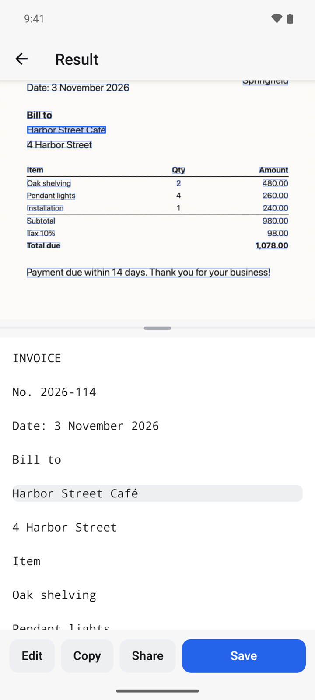

Ứng dụng làm được gì
OCRScanner chụp trang giấy, nắn thẳng và đọc chữ ngay trên điện thoại của bạn. Bạn có thể sửa và sao chép văn bản, tìm trong mọi bản quét đã tạo, và chia sẻ bản quét dưới dạng PDF có thể tìm kiếm, tệp văn bản hoặc ảnh.
- Nhận dạng chữ chạy ngay trên máy và hoạt động khi không có internet.
- Không cần tài khoản. Bản quét nằm trên điện thoại của bạn và không bao giờ bị tải lên.
- Nhập tệp PDF, hoặc chia sẻ ảnh từ các ứng dụng khác trên Android.
- Miễn phí có quảng cáo. Mua Premium một lần để tắt quảng cáo và có thêm ngôn ngữ.
Bắt đầu
- Mở OCRScanner. Lần đầu, danh sách Scans còn trống.
- Chạm Scan để dùng máy ảnh, hoặc Import để chọn ảnh có sẵn.
- Cho phép dùng máy ảnh khi Android hỏi. Nhập ảnh không cần quyền truy cập toàn bộ thư viện ảnh.

Quét một trang
- Chạm Scan và hướng máy ảnh vào trang giấy. Chạm nút chụp để chụp ảnh.
- Ở màn hình Review, ứng dụng tự tìm các cạnh của trang. Kéo góc màu xanh nếu một cạnh bị lệch, hoặc chạm Full page để giữ nguyên cả ảnh.
- Chọn một bộ lọc để làm sạch trang: Original, Magic, Gray hoặc B&W.
- Chạm Rotate 90° nếu trang bị nằm ngang, hoặc Retake để chụp lại.
- Chạm Recognize text.

Để quét nhiều trang vào một tài liệu, hãy mở bản quét sau đó, chạm ⋯ và chọn Add pages.
Nhập tệp PDF
OCRScanner đọc tối đa 20 trang của một tệp PDF, hoặc 50 trang với Premium. Mỗi trang được đọc như một ảnh, nên chữ có sẵn trong PDF không được dùng.
- Chọn một tệp PDF trong trình chọn tệp của điện thoại. Không cần quyền truy cập bộ nhớ.
- Ở màn hình Review, kiểm tra các trang. Nếu PDF dài hơn giới hạn, Review sẽ cho bạn biết có bao nhiêu trang bị bỏ lại.
- Chạm Recognize text.
Chia sẻ ảnh từ ứng dụng khác
Tính năng này dùng được trên Android.
- Trong thư viện ảnh hoặc ứng dụng khác, chọn tối đa 20 ảnh rồi chạm chia sẻ.
- Chọn OCRScanner.
- Mở khóa ứng dụng nếu App lock đang bật. Các ảnh sẽ mở ở Review như một bản quét mới.
Nếu bạn đang có các trang chưa lưu, ứng dụng sẽ hỏi trước khi thay thế chúng.
Đọc, sửa và sao chép văn bản
- Sau khi nhận dạng, Result hiển thị trang ở trên và văn bản ở dưới.
- Chạm một dòng chữ để xem vị trí của nó trên trang. Chạm một từ trên trang để chuyển đến dòng chứa từ đó.
- Những dòng ứng dụng chưa chắc chắn sẽ được tô sáng, để bạn biết cần kiểm tra chỗ nào.
- Chạm Edit để sửa văn bản, Copy để sao chép, hoặc Share để gửi đi.
- Chạm Save để giữ bản quét trong danh sách.

Tìm bản quét theo nội dung chữ
- Ở Scans, chạm Search text in your scans.
- Gõ một từ. Mọi bản quét có chứa từ đó sẽ hiện ra, phần khớp được in đậm.
- Chạm một kết quả để mở bản quét tại đúng chỗ khớp.

Để chỉ xem các bản quét có một thẻ, chạm thẻ đó bên dưới ô tìm kiếm. Khi đó tìm kiếm chỉ tìm trong các bản quét này. Chạm lại thẻ để xem tất cả bản quét.
Chia sẻ hoặc xuất bản quét
- Mở một bản quét và chạm nút chia sẻ.
- Chọn định dạng:
- PDF: ảnh các trang kèm văn bản có thể tìm kiếm nằm phía sau.
- Text file: văn bản thuần (.txt).
- Page image: lưu vào Ảnh hoặc gửi đi.
- Chọn ứng dụng để gửi.

Đổi tên, gắn thẻ và xóa
- Mở một bản quét và chạm ⋯.
- Chọn Rename để đổi tiêu đề, hoặc Edit tags để thêm thẻ, cách nhau bằng dấu phẩy.
- Chọn Recognize text again để đọc lại các trang bằng một ngôn ngữ chữ khác. Văn bản bạn đã sửa sẽ bị thay thế.
- Chọn Delete scan để xóa bản quét khỏi điện thoại.
Sao lưu và khôi phục bản quét
- Ở Scans, chạm biểu tượng cài đặt ở góc trên bên phải.
- Trong Storage, chạm Back up scans. Toàn bộ bản quét được đóng gói thành một tệp.
- Chọn nơi lưu hoặc gửi tệp. Tệp không được mã hóa, nên hãy cất ở nơi an toàn.
- Trên điện thoại mới, chạm Restore from backup và chọn tệp. Ứng dụng sẽ hỏi trước khi thay toàn bộ bản quét trên máy bằng các bản quét trong bản sao lưu.
Khóa ứng dụng và đổi cài đặt
- Ở Scans, chạm biểu tượng cài đặt ở góc trên bên phải.
- Bật App lock để yêu cầu vân tay, khuôn mặt hoặc khóa màn hình trước khi mở các bản quét.
- Trong Text language (OCR), chọn hệ chữ của tài liệu. Latin gồm tiếng Anh, Tây Ban Nha, Pháp, Đức, Indonesia và nhiều ngôn ngữ khác. Ứng dụng gợi ý hệ chữ mà ngôn ngữ trên điện thoại của bạn dùng.
- Chạm App language để dùng ứng dụng với ngôn ngữ khác với điện thoại.
- Chọn Image quality (Balanced hoặc Full) và Theme (System, Light hoặc Dark).

Premium
Premium chỉ cần thanh toán một lần, không phải gói đăng ký. Mở Settings và chạm See Premium. Premium mang lại:
- Không có quảng cáo.
- Chữ Trung, Nhật, Hàn, cùng chữ Hindi và các chữ Devanagari khác trên Android.
- Gộp nhiều bản quét thành một tệp PDF hoặc tệp văn bản.
- Nhập PDF dài hơn: tối đa 50 trang thay vì 20.
Nếu trước đây bạn đã mua Premium, hãy chạm Restore purchase trên màn hình Premium.
Câu hỏi thường gặp
Ứng dụng có dùng được khi không có mạng không? Có. Quét, nhận dạng chữ, tìm kiếm và xuất tệp đều chạy ngay trên điện thoại của bạn.
Bản quét của tôi được lưu ở đâu? Chỉ trên thiết bị của bạn. Nếu gỡ ứng dụng, các bản quét cũng bị xóa theo, vì vậy hãy chạm Back up scans trong Settings trước để giữ lại.
Văn bản bị lỗi. Tôi nên làm gì? Chụp lại ở nơi đủ sáng và để trang giấy phẳng, thử bộ lọc Magic hoặc B&W, và kiểm tra xem Text language (OCR) có đúng với tài liệu không. Bạn cũng có thể sửa từng từ bằng Edit.
Ứng dụng có đọc được chữ viết tay không? Ứng dụng được làm cho chữ in. Chữ viết tay thường bị đọc sai.
Quyền riêng tư
Tài liệu của bạn không bao giờ bị tải lên. Bản miễn phí hiển thị quảng cáo từ Google AdMob. Đọc đầy đủ chính sách quyền riêng tư.